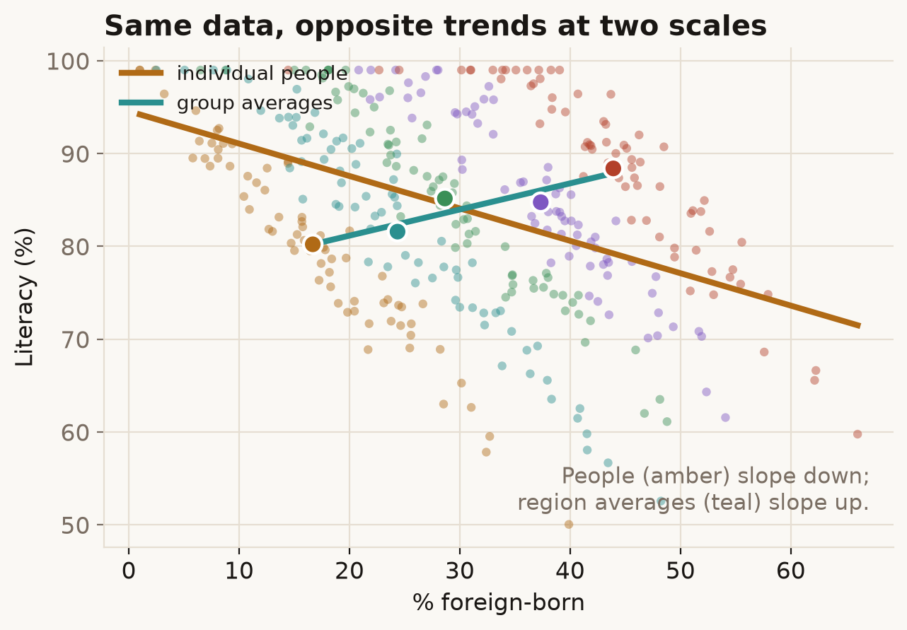

A relationship you measure on whole groups — countries, regions, schools — need not hold for the individuals inside them. Sometimes it points the other way entirely.
Try it
Across regions, places with more foreign-born residents had higher literacy. So are immigrants more literate? Drag from Each person to Region averages.
What's going on
The five region-average dots slope clearly upward: more foreign-born, higher literacy. But each person's dot tells the opposite story — within any region, being foreign-born goes with lower literacy. The averages and the individuals genuinely disagree about the sign.
It happens because immigrants settled where literacy was already high — the industrial, better-schooled regions — for reasons that have nothing to do with their own literacy. A region's average literacy is set mostly by that region, not by its immigrants. So comparing region averages tells you about regions, not about people. Reading an individual-level claim ("immigrants are more literate") off a group-level correlation is the ecological fallacy.

In the real world
This is exactly what W. S. Robinson found in 1950. Using the 1930 US census, he computed the correlation between the share of foreign-born residents and literacy. Across the 48 states it was +0.53 — immigrant-heavy states were more literate. For individuals it was −0.11 — the foreign-born were, person for person, slightly less literate. His paper is why we now treat group-level correlations with care, and it underlies the modern warning against drawing personal conclusions from aggregated data.
How not to get fooled
Match the level of your data to the level of your claim. If you want to say something about people, you generally need data on people; group averages can mislead about them, and the reverse (the "atomistic" fallacy) holds too. When only aggregate data exists, treat any individual-level reading as a hypothesis, not a finding.
Sources
- W. S. Robinson (1950), Ecological Correlations and the Behavior of Individuals, American Sociological Review, 15(3): 351–357. doi
- S. Greenland & J. Robins (1994), Ecologic studies — biases, misconceptions, and counterexamples, American Journal of Epidemiology, 139(8): 747–760. doi
- D. A. Freedman (1999), Ecological Inference and the Ecological Fallacy, International Encyclopedia of the Social & Behavioral Sciences.